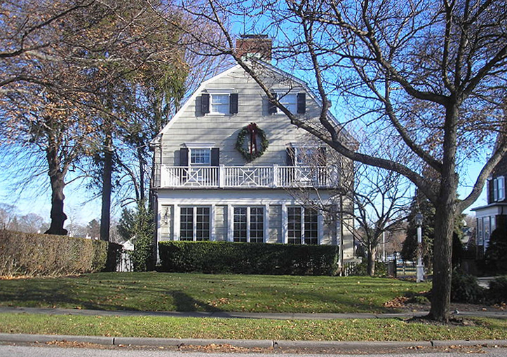

Uno de los casos mas famosos.En 1974,Ronald DeFeo Jr. mató a toda su familia en su casa de Amityville,Nueva York. Un tiempo mas tarde los Lutz se mudaron a esa casa y afirmaron que fueron atormentados por entidades paranormales, con experiencias como leveticaciones, ruidos extranos y visiones demoníacas. Su historia inspiró libros y películas, aunque muchos dudan de la veracidad de los relatos.
 Pincha aquí para ir a la pagina anterior